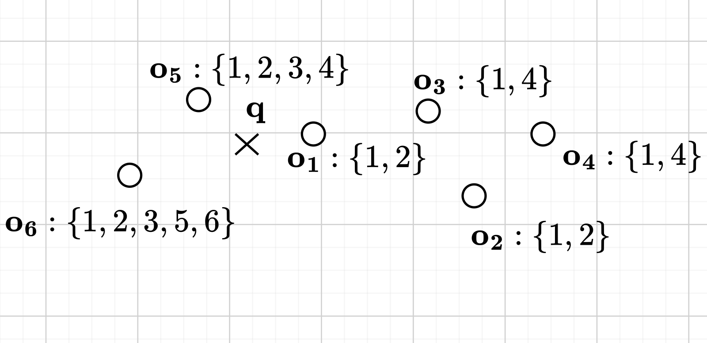
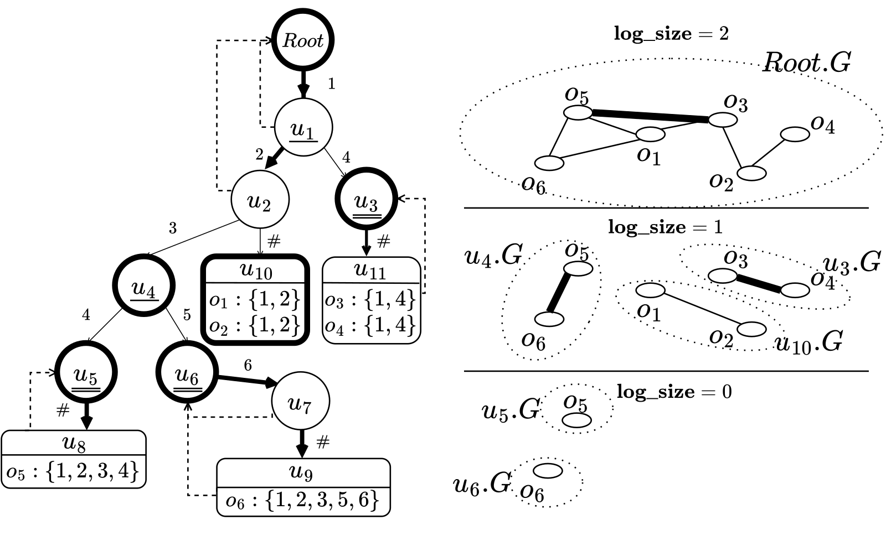
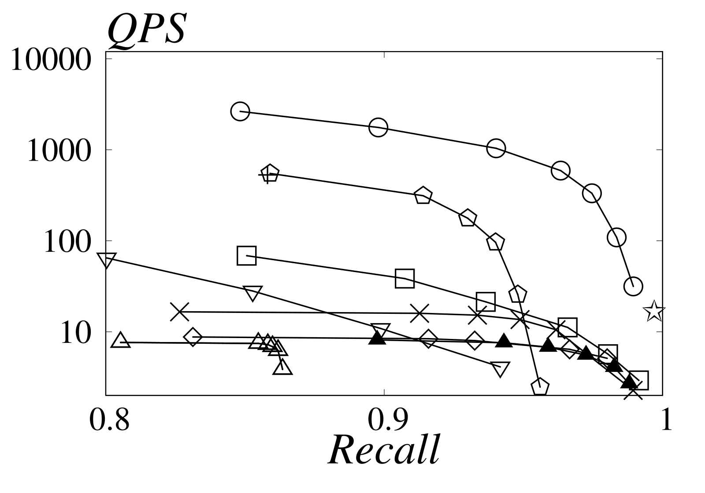

目录 · 6 节
1把标签集合排成一棵前缀树2区域小到下一档 2 的幂，才单建一张图3查询时先找不重叠的区域，再借祖先的图当桥4插入新数据时，允许图大到 4 倍再重建5实验：标签越多，领先越大6它在哪里不占优DYLAN（论文提出的一种可动态更新的标签过滤向量索引）让带标签过滤的向量检索变快，靠的是一条很省的建图规则：标签前缀相同的对象归成一个区域，区域小到下一档 2 的幂才单建一张 HNSW 图，查询时再借上层区域的图当桥。
这类检索在 RAG 和多媒体搜索里很常见。一个 Yelp 评论片段既有 embedding，也带着所属商家的多个类目标签；用户要找「和这句话最像、而且商家同时是餐厅和酒吧」的片段，系统就要在最近邻之外再满足一个标签条件。论文支持两种基本条件：containment 要求对象的标签集合包含查询的全部标签，overlap 只要求包含其中任意一个；两者还能用「且」「或」组合成更复杂的条件。
难点在于两种需求偏好的数据结构不同。标签过滤适合倒排表，近似最近邻（ANNS）适合 HNSW 这类图。条件越苛刻，图上能走的点就越少，图会被切成互不相连的碎块；数据还在不断插入，预先按标签组合建好的索引很快就会过时。
下面用论文图 1 的 6 个对象当贯穿例子（示意，二维平面、标签用数字代替）。

不加过滤时，离 q 最近的两个是 o1、o5。如果条件是 containment {1,3}，答案变成 o5、o6，因为只有它们同时带标签 1 和 3。再看 overlap {4,5}：合格的是 o3、o4、o5、o6。
现有做法在这个例子上各有各的问题。先过滤再暴力扫，候选集一大就慢；先做 ANNS 再过滤，要多取很多结果才能保住 recall。在一张全局 HNSW 上边走边过滤（in-filtering）更隐蔽：按论文图 2 里 Root.G 画出的边，o4 唯一的邻居是 o2，而 o2 不带 4 也不带 5，于是搜索永远走不到 o4。UNG（一种标签感知的图索引）按「完全相同的标签集合」分组建图，overlap {4,5} 会落在 {1,4}、{1,2,3,4}、{1,2,3,5,6} 三张小图上。UNG 用 LNG（标签导航图）连接相关子图，但这类跨多个区域的查询，跨区域连通性可能仍然不够；来了一个新的标签集合，还要大范围改动组与组之间的结构。
把标签集合排成一棵前缀树
DYLAN 先给标签按全局出现次数从多到少编号，每个对象的标签按编号升序排好，再插进一棵 trie（前缀树），末尾补一个终止符 #。这样常见标签靠近树根，许多对象能共享同一段前缀。排序只看频率，不假设标签之间有语义上下级。
树上每个节点代表一个区域：所有标签序列以这段前缀开头的对象。例子里的树长这样（节点编号沿用论文图 2，「档位」下一节解释）：
| 节点 | 前缀 | 区域里的对象 | 档位 | 用哪张图 |
|---|---|---|---|---|
| Root | 空 | o1–o6，共 6 个 | 2 | 自建 Root.G |
| u1 | {1} | o1–o6，共 6 个 | 2 | 借 Root.G |
| u2 | {1,2} | o1、o2、o5、o6 | 2 | 借 Root.G |
| u3 | {1,4} | o3、o4 | 1 | 自建 u3.G |
| u4 | {1,2,3} | o5、o6 | 1 | 自建 u4.G |
| u10 | {1,2,#} | o1、o2 | 1 | 自建 u10.G |
| u5 | {1,2,3,4} | o5 | 0 | 自建 u5.G |
| u6 | {1,2,3,5} | o6 | 0 | 自建 u6.G |
这张表就是 DYLAN 索引的核心中间产物。查询 containment {1,3} 时，只需翻标签 3（两者中编号更大、更稀有的那个）的倒排表，找到 u4，再确认它的前缀里有 1。u4 的区域正好是 {o5, o6}，u4.G 里只有合格对象，搜索不会被不合格的点挡路。
区域小到下一档 2 的幂，才单建一张图
最省事的想法是给每个节点都建一张图。代价是一个带 50 个标签的对象，会沿路径出现在约 50 张图里。另一个极端是只建 Root.G，又回到了上面 o4 走不到的问题。
DYLAN 的折中是给每个区域算一个档位（论文叫 log_size）：对象数取以 2 为底的对数再向下取整，也就是看它落在哪两个 2 的幂之间。只有根节点，或者档位比父节点低的节点，才在自己的区域上建一张 HNSW 图；档位和父节点相同的，直接借父节点用的那张图。
表里能直接验算这条规则。u2 有 4 个对象，档位 2，和父节点 u1 相同，所以借 Root.G；借来的图有 6 个点，没超过 4 的 2 倍。u3 只有 2 个对象，档位掉到 1，就自建一张。
换成大一点的数（示意）：父区域 1500 个对象（档位 10），子区域 1000 个（档位 9），子区域自建。若父区域 1000、子区域 600，两者都在 512 到 1023 之间，档位都是 9，子区域借父图；借来的图不到 1024 个点，比 600 的 2 倍还小。
这条规则保证了两件事：第一，任何区域用的图最多比区域本身大一倍，图里多出来的不合格点有上限。第二，一条从根到叶的路径上，档位最多降 log2 n 次，所以每个对象最多进 min(标签数, log2 n) 张图；n 为 100 万时大约 20 张，总索引大小接近线性。

图里还看得到一个细节：o5 同时出现在 Root.G、u4.G、u5.G 里，但它的向量只在全局数组里存一份，图的邻接表只存对象 ID。作者在 LAION1M 上测过，这层间接访问让查询性能差不到 1%。
查询时先找不重叠的区域，再借祖先的图当桥
containment {1,3} 刚好落在一个区域上，overlap {4,5} 就没这么顺。查询分三步，用 overlap {4,5} 走一遍：
| 步骤 | 做什么 | 例子里的产出 |
|---|---|---|
| 1. 找覆盖集 | 在 trie 上找一组区域，彼此不重叠、合起来恰好是全部合格对象 | {u3, u5, u6}，即 {o3,o4}、{o5}、{o6} |
| 2. 补关键祖先 | 某个节点下有两个以上子树里含覆盖集节点，就把它用的图加进来 | u4 和 u1 是关键祖先，加入 u4.G 和 Root.G（u1 借的是 Root.G） |
| 3. multi-graph search | 在全部选中的图上做一次联合搜索，共用一个候选队列 | 从 o5 沿 Root.G 走到 o3，沿 u4.G 走到 o6 |
第一步只保证这些区域不重叠地覆盖全部合格对象，且每块区域用的图最多比区域大一倍。过滤后区域内是否连通，原文没有保证，靠 supplementEdges（给底层邻居不足的点补上共享同一标签的近邻）和祖先桥边补救。例子里 o4 这次在 u3.G 里和 o3 直接相连，不再被 o2 挡住。可是 u3.G、u5.G、u6.G 三张图彼此孤立，只有它们的话，搜索会困在入口所在的那张图里。
第二步解决这个问题。关键祖先（论文叫 key ancestor）的区域包含了几块覆盖区域，它的图建在更大的对象集合上，自然有跨区域的边。例子里 Root.G 的 o5→o3、u4.G 的 o5→o6 就是这样的桥。
第三步是 multi-graph search：展开一个点时，把它在所有选中图里的邻居都看一遍。每个邻居先查标签，合格的才去全局数组取向量、算距离；合格邻居数到 2M 就停止展开这个点。为什么不在每张图上各搜一遍再合并？那样代价随覆盖集节点数增长，后面的消融也测了这个替代方案。
2 倍的上限只约束每个区域各自用的图，不约束选中的所有图合在一起。作者明确说，它不限定 multi-graph search 总共访问多少个点。
插入新数据时，允许图大到 4 倍再重建
插入会让区域变大，档位随之改变，借图关系也要跟着变。每次一变就重建图，代价太高。DYLAN 的做法是先拷贝或改借，等差距超过阈值才重建。
示意：父区域从 1000 长到 1024，档位从 9 升到 10，而 600 个对象的子区域还在档位 9，不能再借父图。DYLAN 先把父图拷一份给它用；拷来的图只要档位比子区域高出不超过 1 档就继续用，超过 1 档才在子区域上重建。反过来，某个区域长到和父节点同档位，就销毁自己的图改借父图。
相差不超过 1 档时，图的点数小于区域档位对应 2 的幂的 4 倍，所以论文证明每个区域用的图最多是区域的 4 倍大；重建成本摊到后续插入上，单次插入的摊还代价有界。删除只做标记、搜索时跳过；删得多了，无效点会堆积，需要定期压缩。新标签直接拿下一个编号，只在叶子附近分叉，不重排整棵树。
实验：标签越多，领先越大
实验是单线程、全内存，用了 6 个真实数据集，大约 100 万到 500 万个向量，标签种类从 29 到 181,931。所有方法都按 recall 0.9 下的 QPS 调参，结果取 top-10。对比方法里，Curator 基于 IVF 聚类，RWalks 把标签编码进向量。
标签少、标签集合简单的 TripClick 和 LAION1M 上，recall 0.99 时 containment 查询比最好的基线快 5 倍。这说明即使场景不难，DYLAN 也不吃亏。
YTB-Audio（YouTube 音频，带上千个机器生成的主题标签）上差距最大。recall≥0.8 时，containment 比最快的基线快 5.7 倍、overlap 快 2.3 倍；recall≥0.95 时分别快 43.5 倍和 8.7 倍。这说明标签越碎、recall 要求越高，图被过滤切碎的问题越严重，桥边的价值也越大。

作者在 recall 0.9 处统计了搜索开销。YTB-Audio 上，DYLAN 比 UNG 少访问 38.6 倍的点、少做 75.5 倍的距离计算。两个数不同，是因为被标签挡掉的点不算距离。作者据此认为加速来自索引设计而非实现优化，这和「先查标签再算距离」以及「区域图里不合格点有上限」的设计是对得上的。
消融里，把 multi-graph search 换成「每张图各搜一遍再合并」，QPS-recall 曲线明显下降，YFCC（Flickr 图片和视频 embedding，标签种类多且分布不均）上的 overlap 查询最明显。这说明关键祖先带来的桥边确实在起作用，单靠覆盖集里的区域图不够。
先用 80% 数据建索引、再插入剩下 20% 时，DYLAN 比另一种图索引基线 Filtered-DiskANN 快 3 到 5 倍。更新后的索引和直接在最终数据上重建的索引，recall-QPS 曲线几乎重合。
它在哪里不占优
DYLAN 也有输的地方。YTB-Video 上，任何索引都要访问大量向量才能达到高 recall，基于 IVF 的 Curator 随机访问少，高 recall 时与 DYLAN 相当。选择性实验里，LAION1M 在极低选择性下 UNG 打平，YFCC 在极低选择性下 DYLAN 不是最好。
代价也写在账上：建索引比 UNG 和 RWalks 慢，标签集合多的数据集上内存更高。YFCC 总共 2.80GB 的索引里，trie 就占了 1.09GB，因为它的标签种类多、组合复杂。
回到开头那条规则：标签前缀把对象分成区域，档位决定哪些区域值得单独建图，祖先的图负责把区域连起来。DYLAN 的提速，主要来自少走不合格的点、少算不必要的距离。
读完这篇，你觉得
夜读鸮记下了，谢谢你的反馈。
点一下即可，无需登录；再点一次撤回。只统计匿名次数，不记录你是谁。
相关论文RELATED
 Retrieval · 2026-03-11Approximate Nearest Neighbor Search for Modern AI: A Projection-Augmented Graph Approach在图索引里加一层随机投影：PAG 先用投影估计邻居能否进入候选集，估计能进的才算精确距离，建图时用同一套统计量补入边。6 个新 embedding 数据集上单线程 QPS 最多是 HNSW 的 5 倍，建索引时间只有 HNSW 的 20% 到 40%，还支持在线插入；但它把向量存成 16 位浮点，对比里混进了这一项。
Retrieval · 2026-03-11Approximate Nearest Neighbor Search for Modern AI: A Projection-Augmented Graph Approach在图索引里加一层随机投影：PAG 先用投影估计邻居能否进入候选集，估计能进的才算精确距离，建图时用同一套统计量补入边。6 个新 embedding 数据集上单线程 QPS 最多是 HNSW 的 5 倍，建索引时间只有 HNSW 的 20% 到 40%，还支持在线插入；但它把向量存成 16 位浮点，对比里混进了这一项。 Infra · 2026-10-29Lossless Compression of Proximity Graph Indexes for Efficient Approximate Nearest Neighbors Search向量检索的 HNSW 图索引里，向量本身已经常被量化压小，邻接表里的边反而成了内存大头，但边要在每次查询走图时现场解码，压缩不能拖慢查询。eBay 和比萨大学的这篇工作先离线给节点重新编号，让相邻节点的编号靠近，再用支持 SIMD 的整数压缩器 Stream VByte 现场解码。边存储最多省下 52.7%，延迟几乎不变；在 eBay 线上部署时，边存储最多减少 44.3%，查询延迟没有变差。
Infra · 2026-10-29Lossless Compression of Proximity Graph Indexes for Efficient Approximate Nearest Neighbors Search向量检索的 HNSW 图索引里，向量本身已经常被量化压小，邻接表里的边反而成了内存大头，但边要在每次查询走图时现场解码，压缩不能拖慢查询。eBay 和比萨大学的这篇工作先离线给节点重新编号，让相邻节点的编号靠近，再用支持 SIMD 的整数压缩器 Stream VByte 现场解码。边存储最多省下 52.7%，延迟几乎不变；在 eBay 线上部署时，边存储最多减少 44.3%，查询延迟没有变差。 Infra · 2026-10-28Failure-Resilient and Verifiable Distributed Approximate Nearest-Neighbor Retrieval分布式向量库的副本能保证查得到，却不能保证查到的是真的：被攻破的副本可以返回签名合法、内容被篡改的近邻结果。TrustANN 在路由层之上加一层中间件，对每个分片，从副本回复里贪心挑出一组：数量达到设定下限，两两相似分够高（候选集合重合度加排序一致度），并覆盖设定数量的不同故障域（如可用区）；凑不齐就去找新的独立副本补，仍不够则明确返回未验证。副本在线不等于结果可信。在多节点测试里，被篡改结果被当成可信的比例从 100% 降到 0，正常负载下 p95 延迟只多 9.36%。
Infra · 2026-10-28Failure-Resilient and Verifiable Distributed Approximate Nearest-Neighbor Retrieval分布式向量库的副本能保证查得到，却不能保证查到的是真的：被攻破的副本可以返回签名合法、内容被篡改的近邻结果。TrustANN 在路由层之上加一层中间件，对每个分片，从副本回复里贪心挑出一组：数量达到设定下限，两两相似分够高（候选集合重合度加排序一致度），并覆盖设定数量的不同故障域（如可用区）；凑不齐就去找新的独立副本补，仍不够则明确返回未验证。副本在线不等于结果可信。在多节点测试里，被篡改结果被当成可信的比例从 100% 降到 0，正常负载下 p95 延迟只多 9.36%。 Infra · 2026-11-05Modular and Efficient Approximate Nearest Neighbors Search with Vectorium and kANNolo做向量检索时，换一种 embedding 形态或量化方式，往往就得换一个库。现有的 ANN 库要么只支持一种组合，要么每种组合各写一份代码，没有一个 ANN 库在同一套接口下覆盖稠密、稀疏和多向量三种 embedding。作者为此开源了两个 Rust 库：Vectorium 负责存向量、算距离和做量化，kANNolo 在它上面实现 HNSW、IVF 等索引。任意组合都在编译时生成专用代码，所以拆成模块不会拖慢运行速度。它的两段式 HNSW 先在压缩过的向量上找候选，再用更精确的向量重新打分。在稠密数据上要求 99% 的召回率时，它每秒处理的 query 是 HNSW 参考实现的 2.5 到 3.3 倍，索引只有一半大。同时做稠密和稀疏检索的团队值得读，因为它说明了模块化和速度可以兼得，代价放在编译时。
Infra · 2026-11-05Modular and Efficient Approximate Nearest Neighbors Search with Vectorium and kANNolo做向量检索时，换一种 embedding 形态或量化方式，往往就得换一个库。现有的 ANN 库要么只支持一种组合，要么每种组合各写一份代码，没有一个 ANN 库在同一套接口下覆盖稠密、稀疏和多向量三种 embedding。作者为此开源了两个 Rust 库：Vectorium 负责存向量、算距离和做量化，kANNolo 在它上面实现 HNSW、IVF 等索引。任意组合都在编译时生成专用代码，所以拆成模块不会拖慢运行速度。它的两段式 HNSW 先在压缩过的向量上找候选，再用更精确的向量重新打分。在稠密数据上要求 99% 的召回率时，它每秒处理的 query 是 HNSW 参考实现的 2.5 到 3.3 倍，索引只有一半大。同时做稠密和稀疏检索的团队值得读，因为它说明了模块化和速度可以兼得，代价放在编译时。 Infra · 2026-11-04OctEx: Billion-Scale Vector Search by Precomputed Lattice Neighbor Lists on GPUsGPU 上做高召回的向量检索，图检索慢在一轮等一轮的串行链上，而不是算距离本身。OctEx 把 GPU 显存花在建库时预先算好的近邻列表上。它把数据随机投影成几百份低维副本，每份把空间切成格子，并给每个格子存一张离格子中心最近的向量列表。查询先算出自己在每份副本里落进哪个格子，一步并行读出这些列表拿到候选，再读最好那几个候选各自预存的邻居表，只走固定的几轮。和 GPU 上的标准图检索基线 CAGRA 比，在高召回下，它在一亿条以内的七个数据集上快 2.0 到 46.4 倍。到了十亿条的数据集上，优势缩小到 1.46 到 2.05 倍。用显存换掉查询时的串行等待，是这篇的核心取舍。
Infra · 2026-11-04OctEx: Billion-Scale Vector Search by Precomputed Lattice Neighbor Lists on GPUsGPU 上做高召回的向量检索，图检索慢在一轮等一轮的串行链上，而不是算距离本身。OctEx 把 GPU 显存花在建库时预先算好的近邻列表上。它把数据随机投影成几百份低维副本，每份把空间切成格子，并给每个格子存一张离格子中心最近的向量列表。查询先算出自己在每份副本里落进哪个格子，一步并行读出这些列表拿到候选，再读最好那几个候选各自预存的邻居表，只走固定的几轮。和 GPU 上的标准图检索基线 CAGRA 比，在高召回下，它在一亿条以内的七个数据集上快 2.0 到 46.4 倍。到了十亿条的数据集上，优势缩小到 1.46 到 2.05 倍。用显存换掉查询时的串行等待，是这篇的核心取舍。
讨论
欢迎补充实验细节、复现经验或不同看法。需 GitHub 登录。
正在加载讨论…